Um convite para a [NOME DA LOJA]: ser a primeira loja do Pertim e usar o sistema sem pagar mensalidade, para sempre.
Pertim · convite para a loja parceira
Antes de tudo
Olá, [NOME DO RESPONSÁVEL]. Queremos construir o Pertim com a sua loja.
O Pertim é um sistema que liga o seu pet shop aos donos de pet do bairro: eles encontram a sua loja, pedem o horário pelo celular e já pagam o sinal. Você só aceita e atende.
storefront
O que é
Um app gratuito para os seus clientes e um painel para a sua loja, que concentram pedidos, agenda, pagamento do sinal e lembretes.
handshake
O convite
Ser a primeira loja a usar o Pertim e nos ajudar a deixá-lo do jeito que um pet shop de verdade precisa.
workspace_premium
O que você ganha
Mensalidade gratuita para sempre e um sistema pensado a partir da rotina da sua loja.
O Pertim está na fase de projeto: as telas deste material são os desenhos do sistema. É justamente por isso que a sua opinião agora vale tanto, porque ainda dá para mudar tudo.
Pertim · convite para a [NOME DA LOJA]
O dia a dia de um pet shop
Isso parece familiar?
chat
WhatsApp que não para
Metade do dia vai em responder preço, horário livre e "tem vaga amanhã?".
event_busy
Cliente que não aparece
O horário fica reservado, outro cliente foi recusado e a loja perde o atendimento.
edit_calendar
Agenda no caderno
Dois banhos no mesmo horário, remarcação esquecida, recado que ninguém anotou.
payments
Sinal difícil de cobrar
Pedir adiantamento por mensagem é chato, e conferir cada Pix toma tempo.
vaccines
Cliente que some
O tutor esquece o próximo banho ou o reforço da vacina e acaba indo a outro lugar.
travel_explore
Difícil de ser achado
Quem mora perto e procura um pet shop pelo celular nem sempre encontra a sua loja.
Pertim · convite para a [NOME DA LOJA]
O que é o Pertim
Dois lados que conversam sozinhos
Para o seu cliente · grátis
App do tutor
No celular Android ou no navegador do computador. Ele encontra lojas perto, vê preços e avaliações, pede o horário, paga o sinal e guarda a carteira de vacinas de cada pet.
Para a sua loja
Painel da loja
No computador ou tablet da loja, pelo navegador. Você aceita pedidos, vê a agenda do dia, registra o atendimento, define preços e regras e responde avaliações.
Quem tem iPhone também consegue usar: pelo navegador, no site do Pertim.
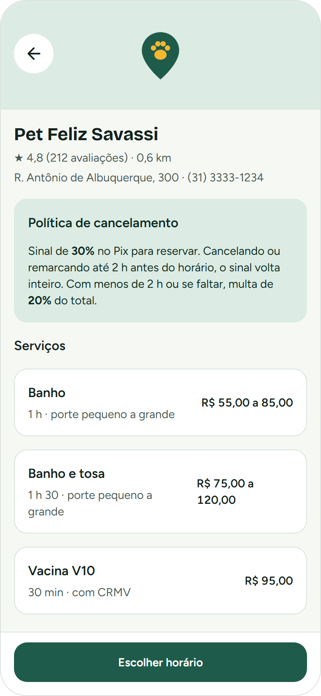
Sua loja no app do tutor
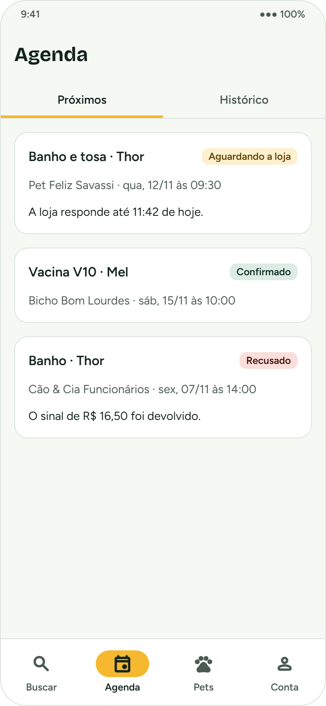
A agenda do tutor
Pertim · convite para a [NOME DA LOJA]
Como funciona
Do primeiro clique ao pet de banho tomado
Cada etapa a seguir tem a sua própria página neste material.
1Tutor
Encontra a sua loja
Busca "perto de mim" e vê preço, nota e regras.
2Tutor
Pede um horário
Só aparecem horários que a loja tem livre.
3Tutor
Paga o sinal
Pix, débito ou crédito. Só depois o pedido chega para você.
4Loja
Aceita ou recusa
Nada entra na agenda sem o seu "sim".
5Loja
Atende e conclui
Registra o que foi feito e o pet ganha histórico.
6Tutor
Avalia e volta
Recebe lembrete do próximo banho e da vacina.
Pertim · convite para a [NOME DA LOJA]
Etapa 1 · ser encontrado
A sua loja na vitrine do bairro
O tutor procura por "perto de mim", por serviço, espécie, preço ou nota.
A página da sua loja mostra endereço, telefone, serviços com preço, avaliações e as suas regras de sinal e multa.
O cliente chega sabendo quanto vai pagar: menos pergunta repetida no WhatsApp.
Os preços são seus. O Pertim não sugere nem limita valores.
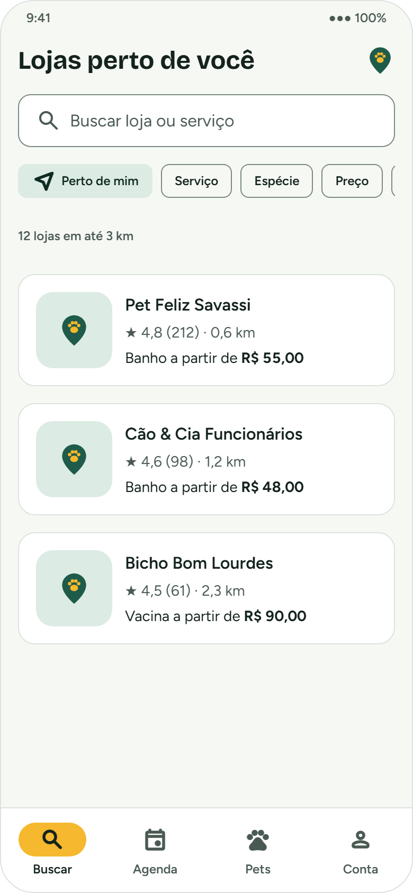
BuscaPágina da loja
Pertim · convite para a [NOME DA LOJA]
Etapas 2 e 3 · pedido e sinal
O pedido chega com o sinal já pago
O tutor escolhe pet, serviço e um horário que a sua loja tem livre.
Antes de confirmar, ele vê o total, o sinal e a multa em reais.
Paga o sinal por Pix, débito ou crédito. No Pix, tem 15 minutos.
Se não pagar a tempo, o pedido é descartado e você nem fica sabendo.
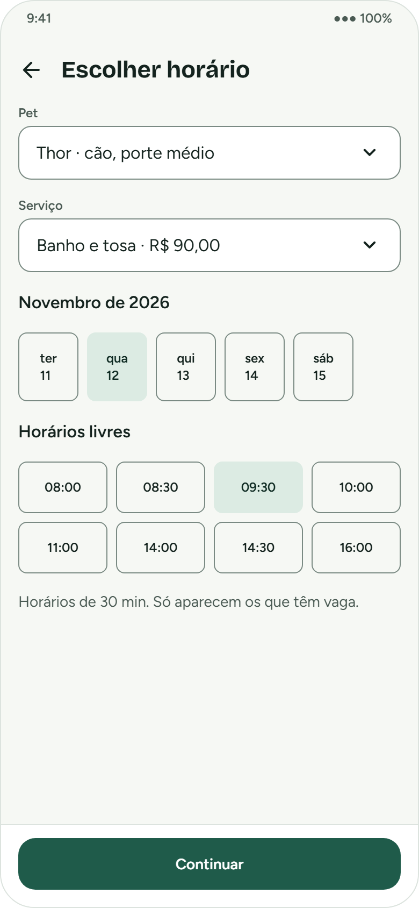
Escolher horário
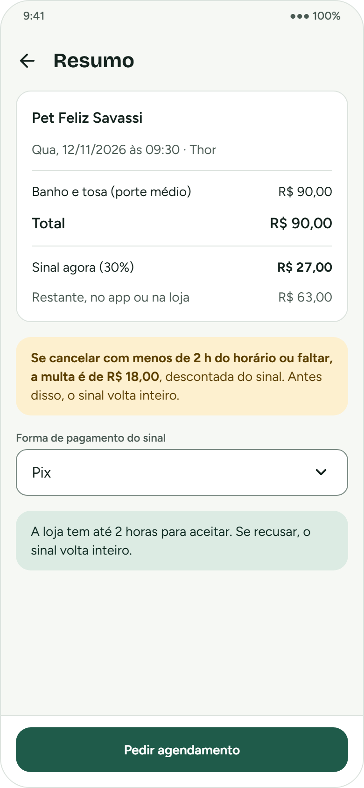
Resumo com sinal e multa
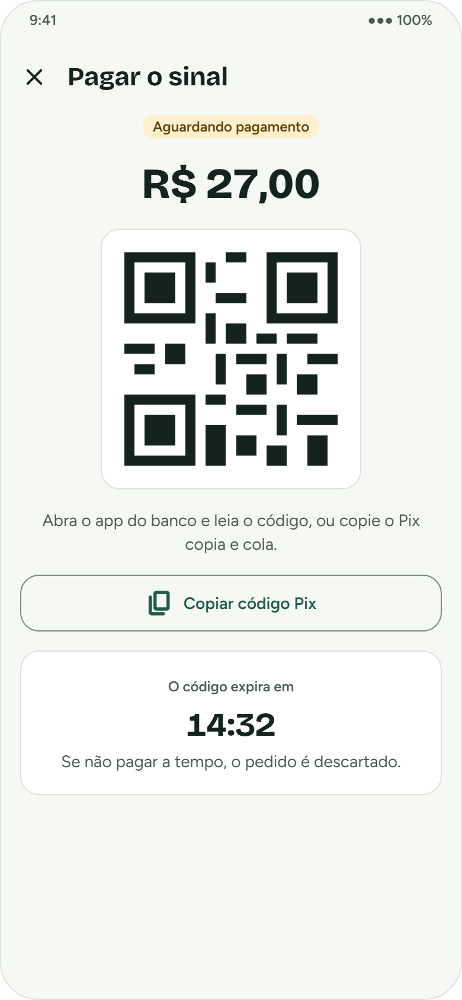
Sinal no Pix
Pertim · convite para a [NOME DA LOJA]
Etapa 4 · você decide
Nada entra na sua agenda sem o seu "sim"
Cada pedido mostra o serviço, o pet, o sinal pago e quanto tempo falta para responder.
Você vê o histórico do cliente: quantas vezes faltou e a nota que outras lojas deram.
Um clique para aceitar ou recusar. Se recusar, o sinal volta inteiro para o tutor.
Os pedidos aparecem na tela na hora, sem precisar atualizar.
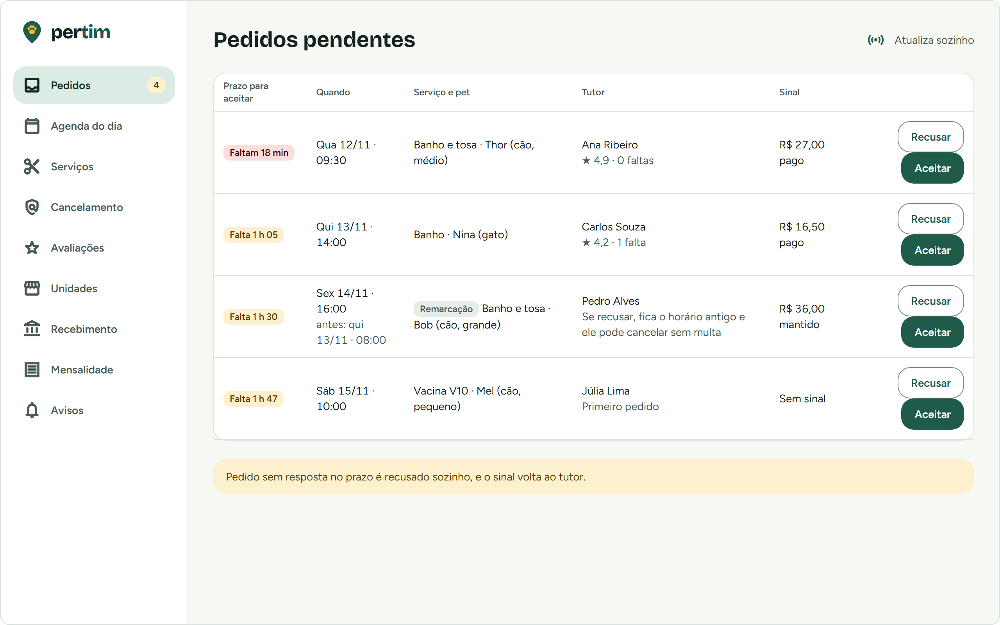
Painel da loja · pedidos pendentes
Pertim · convite para a [NOME DA LOJA]
Etapa 4 · prazo para responder
Prazos claros para os dois lados
O tutor sabe até quando a loja vai responder, e a loja sabe quanto tempo tem. O prazo depende de quando é o horário pedido:
Horário pedido
Prazo da loja para responder
Daqui a mais de 48 horas
até 24 horas
Entre 24 e 48 horas
até 12 horas
Em menos de 24 horas
até 4 horas
O prazo sempre termina pelo menos 1 hora antes do horário. Antes de vencer, a loja recebe um aviso. Se ninguém responder, o pedido expira, o sinal volta para o tutor e ele recebe sugestões de outro horário.
Pertim · convite para a [NOME DA LOJA]
Agenda do dia
A agenda se organiza sozinha
Grade por hora e por tipo de serviço, com quantos atendimentos cabem ao mesmo tempo.
Você diz, por exemplo, "2 banhos e 1 vacina por vez", e o Pertim não deixa marcar além disso.
Liga com o seu Google Agenda nos dois sentidos: pedido confirmado vai para lá, e compromisso de lá bloqueia o horário no app.
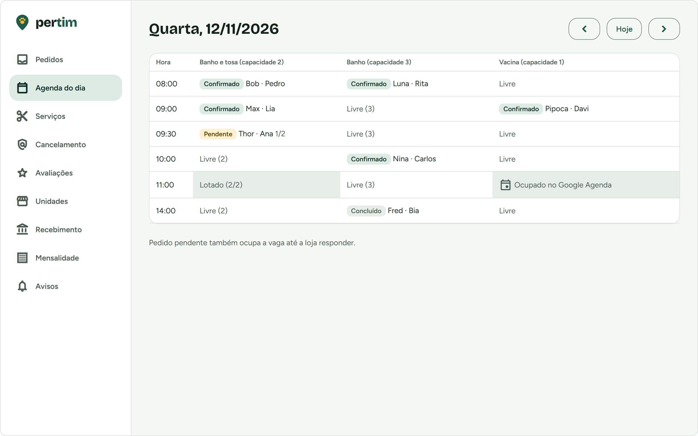
Painel da loja · agenda do dia
Pertim · convite para a [NOME DA LOJA]
Sinal e multa · as regras são suas
Menos faltas, sem você precisar cobrar ninguém
Você escolhe o sinal: de 0% (sem sinal) a 100% do serviço. Ele é abatido do valor final.
Você escolhe a multa para quem cancela em cima da hora ou falta: de 0% a 50% do total.
Até 2 horas antes, o tutor cancela ou remarca sem multa, em qualquer loja.
Imprevisto de um cliente fiel? Você pode dispensar a multa.
Mudou a regra? Vale só para pedidos novos.
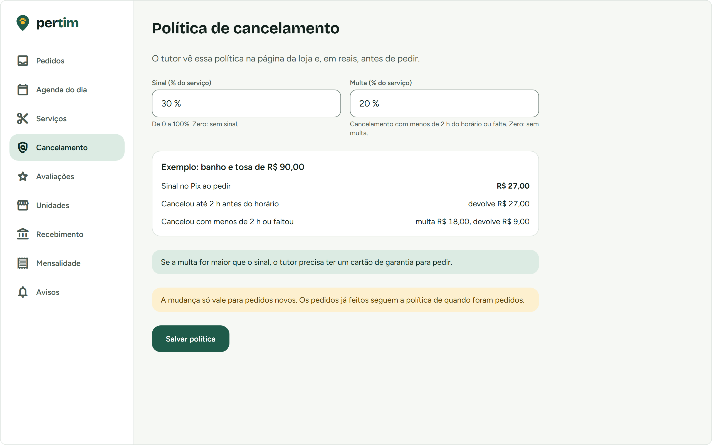
Painel da loja · política de cancelamento
Pertim · convite para a [NOME DA LOJA]
Remarcar e cancelar
Imprevistos resolvidos sem troca de mensagens
O tutor remarca pelo app, e o sinal já pago continua valendo.
A remarcação também precisa do seu aceite. Se não der, o horário antigo continua marcado.
O tutor sempre vê, antes de cancelar, o que acontece com o dinheiro dele.
Se o cancelamento for da loja, o sinal volta inteiro para o cliente.
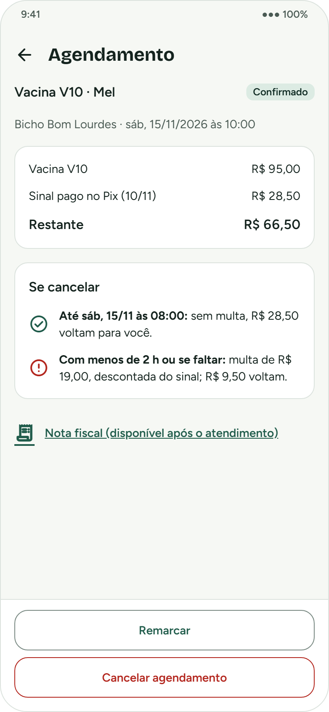
O que acontece se cancelar
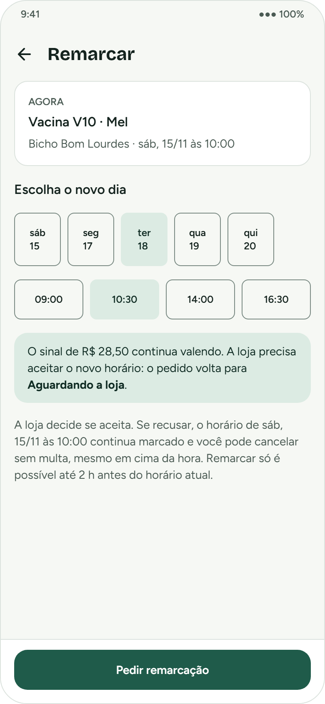
Remarcar
Pertim · convite para a [NOME DA LOJA]
Lembretes automáticos
O Pertim lembra por você
Para o tutor, no app e no WhatsApp: pedido aceito, lembrete antes do horário, atendimento concluído, reforço da vacina e próximo banho.
Para a loja: pedido novo, prazo acabando, cancelamento, lembrete do dia e avaliação para responder.
Você escolhe onde quer ser avisado: no painel, por WhatsApp, SMS ou e-mail.
O custo das mensagens de WhatsApp e SMS já faz parte do Pertim.
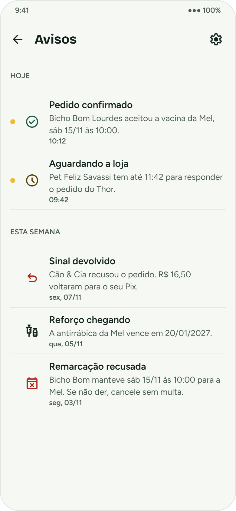
Avisos do tutor
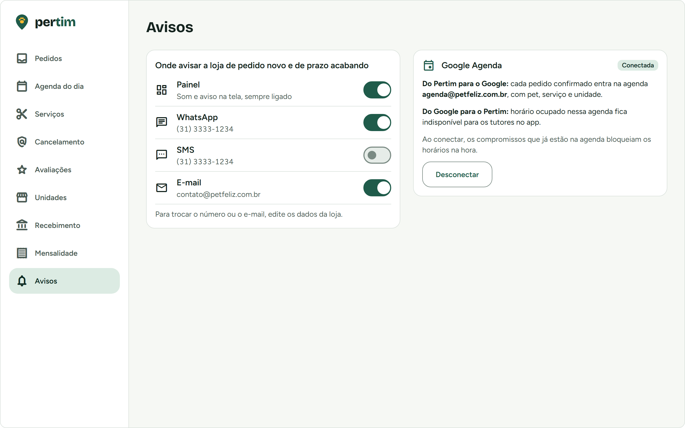
Avisos da loja
Pertim · convite para a [NOME DA LOJA]
Etapa 5 · atendimento
Atendeu, registrou: o pet ganha histórico
Ao concluir, você registra o que foi feito: banho, tosa, consulta ou vacina com lote e CRMV.
O registro vai para a carteira de vacinas do pet com o selo "Verificado pela loja".
O restante é pago pelo app ou na loja, como preferir. A nota fiscal pode ser anexada ao atendimento.
Cliente não veio? Um clique registra a falta e aplica a sua multa.
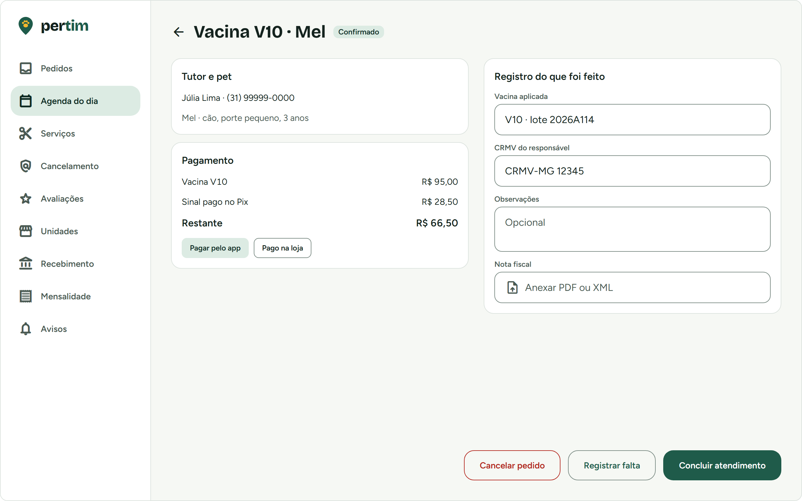
Concluir atendimento
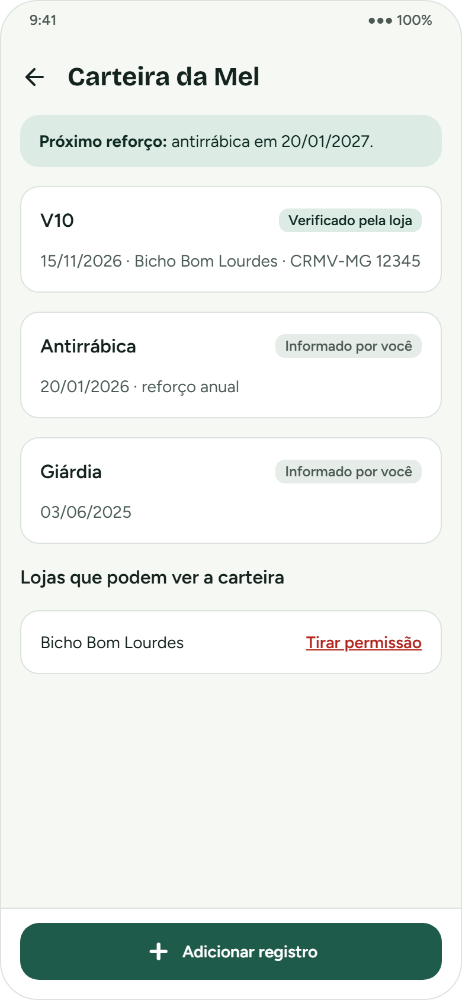
Carteira do pet
Pertim · convite para a [NOME DA LOJA]
Etapa 6 · avaliações
Boa reputação que trabalha por você
Depois do atendimento, o tutor dá uma nota de 1 a 5 e pode deixar um comentário.
Direito de resposta: o comentário espera 72 horas antes de ser publicado, para você responder antes.
Conteúdo ofensivo pode ser denunciado e é removido.
Você também avalia o cliente, de forma privada: outras lojas veem só o número de faltas e a nota média dele.
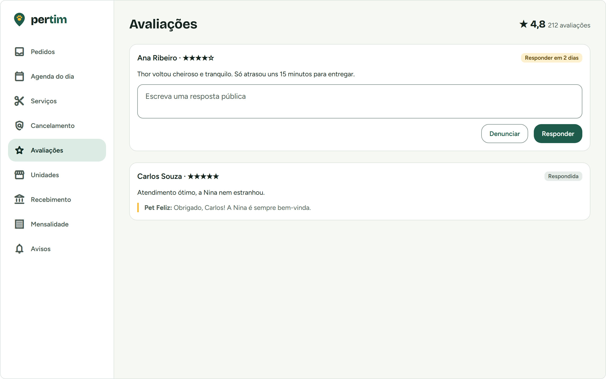
Painel da loja · avaliações
Pertim · convite para a [NOME DA LOJA]
Seu dinheiro
O dinheiro cai direto na conta da sua loja
Sinal e restante pagos pelo app vão para a conta da sua loja no provedor de pagamento.
O Pertim não recebe, não segura e não repassa o seu dinheiro.
Sem taxa do Pertim por atendimento. Só existe a tarifa do provedor de pagamento, como em qualquer maquininha.
O Pertim não guarda dados de cartão dos seus clientes.
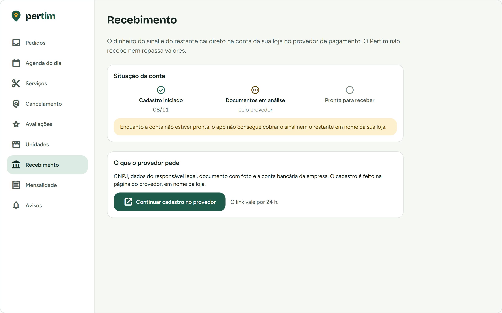
Painel da loja · recebimento
Pertim · convite para a [NOME DA LOJA]
Serviços e filiais
Do seu jeito, em uma ou várias unidades
Banho, tosa, vacina, consulta veterinária e táxi pet, com duração e preço seus, que podem variar pelo porte.
Tem filial? Cada unidade tem endereço, horário e agenda próprios, no mesmo login.
Consulta e vacina aparecem só nas unidades com veterinário cadastrado.
Táxi pet com o raio de atendimento que você definir.
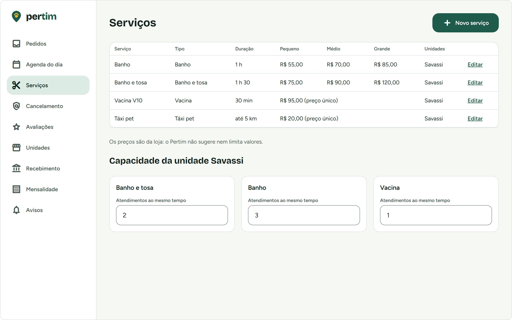
Painel da loja · serviços e capacidade
Pertim · convite para a [NOME DA LOJA]
Resumo
O que muda na rotina da loja
Situação
Hoje
Com o Pertim
Marcar horário
Mensagem para lá e para cá
O cliente escolhe um horário livre e você aceita com um clique
Sinal
Pedir e conferir Pix um a um
O pedido só chega com o sinal pago, direto na conta da loja
Faltas
Prejuízo e vaga perdida
Sinal e multa definidos por você, aplicados automaticamente
Agenda
Caderno, conflitos e esquecimentos
Grade por serviço, com limite de vagas e Google Agenda
Cliente voltar
Depende da memória do tutor
Lembrete de banho e de vacina no WhatsApp e no app
Novos clientes
Boca a boca
Sua loja na busca "perto de mim", com nota e preços
Pertim · convite para a [NOME DA LOJA]
A nossa proposta
A primeira loja do Pertim
R$ 0
de mensalidade. Para sempre.
As outras lojas vão pagar uma mensalidade fixa. A [NOME DA LOJA] não paga, nunca.
Todas as funções deste material, incluindo os avisos por WhatsApp e SMS, sem custo de mensalidade.
Você ajuda a decidir como o Pertim vai ser: as suas sugestões chegam direto a quem está construindo.
Sem taxa do Pertim por atendimento. Só a tarifa do provedor de pagamento, sobre o que você receber pelo app.
Pertim · convite para a [NOME DA LOJA]
Em troca
O que esperamos da loja piloto
forum
Contar como a loja funciona
Uma conversa para entendermos a sua rotina: como marca, como cobra, o que mais dá trabalho.
visibility
Olhar as telas e opinar
Ver os desenhos antes de virarem sistema e dizer o que falta, o que sobra e o que confunde.
storefront
Usar com clientes de verdade
Quando a primeira versão estiver pronta, cadastrar seus serviços e preços e receber pedidos reais pelo Pertim.
rate_review
Dar retorno sincero
Avisar quando algo der errado ou atrapalhar o atendimento. Reclamação é o que mais nos ajuda.
Pertim · convite para a [NOME DA LOJA]
Como vai ser
As etapas do piloto
1
Conversa inicial
Conhecemos a loja, a equipe e a rotina de atendimento.
2
Revisão das telas
Você vê os desenhos e ajustamos o que não fizer sentido para a loja.
3
Loja configurada
Juntos cadastramos unidades, serviços, preços, sinal, multa e avisos.
4
Uso real
Seus clientes começam a pedir pelo Pertim, ao lado do jeito de hoje.
5
Ajustes contínuos
Corrigimos e melhoramos a partir do que a loja contar.
Você não precisa largar o jeito atual de trabalhar: o Pertim entra aos poucos, ao lado do telefone e do WhatsApp da loja. As datas de cada etapa serão combinadas com você.
Pertim · convite para a [NOME DA LOJA]
Perguntas frequentes
Antes que você pergunte
Vou pagar alguma coisa?
Mensalidade, nunca. Só a tarifa do provedor de pagamento sobre o que você receber pelo app. Pagamento feito na loja continua como hoje.
Meus clientes pagam para usar?
Não. O app é gratuito para o tutor.
Preciso comprar algum equipamento?
Não. O painel abre no navegador de um computador, notebook ou tablet com internet.
Funcionários precisam de login próprio?
Na primeira versão, a equipe toda usa o mesmo login da loja.
E os dados dos meus clientes?
Seguem a LGPD. Você vê a carteira de vacinas do pet que agendou com você e, depois, só com permissão do tutor.
Quais animais posso atender?
Todos. O sistema aceita qualquer espécie, e você decide quais pedidos aceita.
Pertim · convite para a [NOME DA LOJA]
Próximo passo
Topa ser a primeira loja do Pertim?
Responda esta mensagem com um "topo" e marcamos a conversa inicial no dia e horário que for melhor para você. Pode ser na loja ou por videochamada.